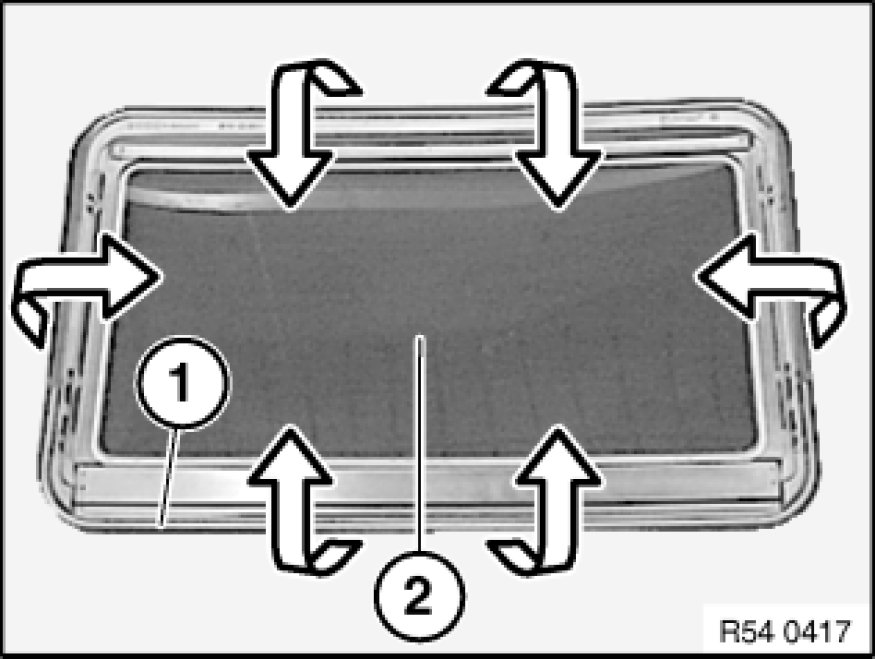
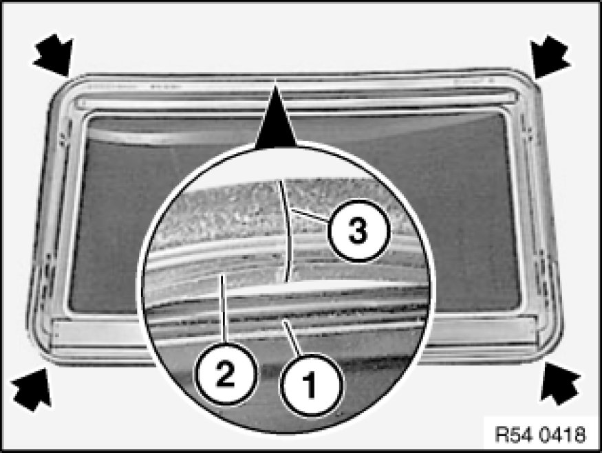

54 12 117 Replacing Seal For Glass Slide/Tilt Sunroof Lid
54 12 117 - Replacing seal for glass slide/tilt sunroof lid

Necessary preliminary tasks:
- Remove glass slide/tilt sunroof lid Service and Repair

Detach seal (1) from glass slide/tilt sunroof lid (2).

Installation:
Coat guide channel (1) and seal (2) with soapy water.
Begin installation at rear middle, with sealing joint (3).
Do not pull seal too tightly in radii (leakage).